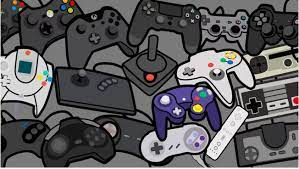

Ayudan a adquirir nuevas habilidades, nos hacen sentirnos más fuertes y con más confianza, y enseñan un universo fascinante que hasta ese momento era desconocido. Pero esto también tiene su inconveniente, como la creación de malos comportamientos relacionados con el racismo o la violencia.
Los mejores juegos a lo largo de la historia
 Click aquiLa nueva generacion esta superando espectativas en muchos criticos
Disfruta de una velocidad y un rendimiento de nueva generación con Xbox Velocity Architecture, impulsada por un SSD personalizado y software integrado. Biblioteca de juegos en expansión Disfruta de miles de juegos de cuatro generaciones de Xbox con compatibilidad con versiones anteriores, incluidos títulos optimizados, en el momento de su lanzamiento.Series X, la nueva generación de Xbox. Finalmente, Microsoft ha revelado características clave de su siguiente consola de videojuegos, el Xbox Series X, que llegará al mercado dentro de un año. Durante la ceremonia de los Game Awards 2019 se dio uno de los anuncios más inesperados del evento: la revelación de la siguiente consola de Xbox.